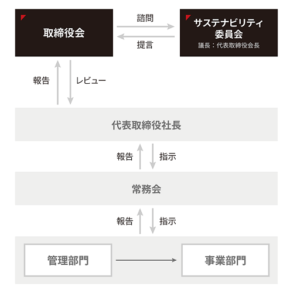
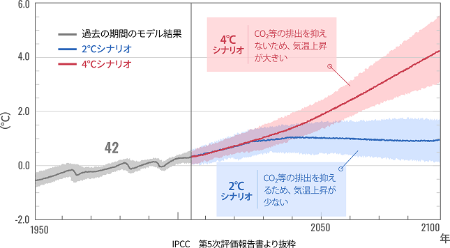
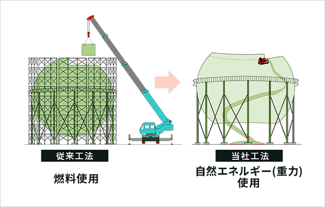
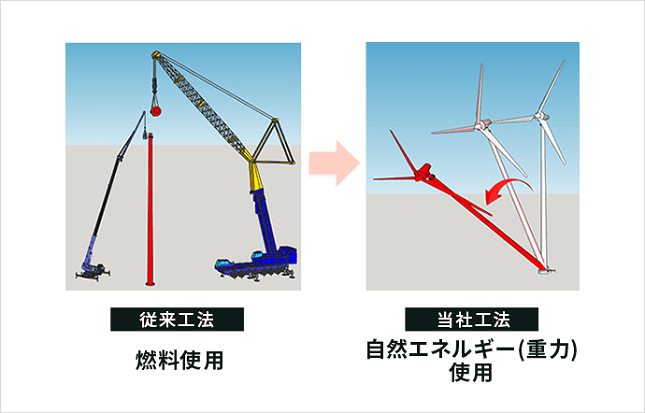

文中の将来に関する事項は、当連結会計年度末現在において当社グループが判断したものであります。
当社は「柔軟な発想と創造性、それを活かした技術力により地球環境に貢献します」との企業理念を掲げております。プラント解体業界におけるエンジニアリングカンパニーとして、顧客のニーズを的確かつ先見的に把握し、革新的な提案を行っていくことで環境関連企業として社会に貢献していくことを経営の基本方針としております。
当社の顧客である鉄鋼業界・電力業界等のインフラビジネス各社が相次いでＣＯ２排出量削減目標を公表し、2020年10月には政府が「2050年カーボンニュートラル宣言」を出すなど、建設業界・プラント業界にも「持続可能な開発目標（ＳＤＧｓ）」を意識した事業展開が求められるようになりました。
当社は経営理念に「地球環境に貢献します」を掲げ、2024年1月期から2026年1月期を期間とする３ヶ年の中期経営計画「脱炭素アクションプラン2025」のもと、当社独自のESG経営を進め、「(5)優先的に対処すべき事業上および財務上の課題」に挙げる諸施策を積極的に行うとともに、経営全般にわたる一層の効率化を推進し、事業競争力を高め、経営基盤の強化に努めてまいります。
当社は企業価値の向上を目指すにあたり、売上高、営業利益、１株当たり当期純利益金額、自己資本利益率を重要な経営指標としております。
2026年１月期を最終年度とする「脱炭素アクションプラン2025」を策定し、連結業績において売上高120億円以上、営業利益12億円以上、１株当たり当期純利益金額99円以上、自己資本利益率13％以上の早期達成に向け全力を傾注してまいります。
当社の属する建設業界におきましては、東京オリンピック・パラリンピックに関連する事業の効果などにより建設投資額は2014年から増加が続いており工事数も増加傾向ですが、慢性的な人材不足による労務費の上昇や採用難、資材価格の上昇等の問題が顕在化しており、今後も不安定な経営環境が続くものと思われます。
持続可能な開発目標（ＳＤＧｓ）の実現に向けて、企業理念「柔軟な発想と創造性、それを活かした技術力により地球環境に貢献します」に基づき、2024年１月期から2026年１月期を期間とする３ヶ年の「脱炭素アクションプラン2025」を中期経営計画として策定いたしました。プラント解体のパイオニアとして、次の諸施策を推進することで、社会的サステナビリティへの貢献と利益ある成長の両立に努めてまいります。
「脱炭素アクションプラン2025」
・脱炭素解体ソリューション
・ＤＸプラントソリューション
・人事戦略
当社グループのサステナビリティに関する考え方および取り組みは、次のとおりであります。なお、文中の将来に関する事項は、当連結会計年度末現在において、当社グループが判断したものであります。
当社は地球環境に貢献することを目標としており、人にも地球にも優しい解体を世の中の当たり前にしていきたいと考えております。ただ壊すのではなく、環境への配慮はもちろん、ＥＳＧ経営の強化等も図ることで、今後も理にかなった高度な解体工事を提供してまいります。
また、オダコーポレーション株式会社および株式会社ＴＯＫＥＮをグループ会社化したことで、グループ全体の事業の幅も広がっております。今後は当社の主業であるプラント解体事業に加え、プラントのメンテナンス事業にも注力してまいります。
プラント設備に日頃から良質なメンテナンスを提供することで、設備寿命を延ばすことができるだけでなく、設備の部分ごとに分解し、再利用が可能な部分をリユースやリサイクルすることが可能となります。結果的に、発生する廃棄物や有害物質を削減することとなり、環境への負担を大幅に抑えることができるため、地球環境への貢献を大きく促進させると確信しております。
当社グループは持続可能性の観点から、業界ひいては社会全体における企業価値の向上を図るため、サステナビリティ推進体制の強化に努めております。
具体的には、「多様性」や「気候変動」をガバナンスプロセスに組み入れ、サステナビリティ委員会を設置するとともに、各種委員会や組織が相互に関係し合うような体制を構築しております。
リスク管理の統括機関として組織される取締役会が、リスクと機会の管理プロセスに関与しており、その下部に位置しているサステナビリティ委員会において、取締役会によるサステナビリティ方針の監督を支援しております。

なお、気候変動や資源循環、環境汚染などをはじめとした環境問題や、人権・労働問題、地域社会への貢献など、社内の経営層による検討の場である常務会で議論しております。この常務会は毎週実施され、事業に対する継続的な見直しをはじめとする様々なテーマを議題としており、サステナビリティに関連する事項について議論を行っております。
（２）戦略
当社は「柔軟な発想と創造性、それを活かした技術力により地球環境に貢献します」を企業理念に掲げ、当社グループの提供する解体・メンテナンス事業を通じて社会課題の解決へ貢献することで、持続可能な社会の実現に向けた企業活動を推進しております。
特に、気候変動への対応は優先度の高い課題として認識しており、「脱炭素解体」をキーワードに、地球温暖化への対応を重要課題として積極的に取り組んでおります。
また、当社は環境への配慮だけではなく、人事戦略を中期経営計画の主要な柱として設立し、人的資本の立場に立った経営を重視しております。環境と人材の双方を大切にすることで、当社グループの発展はもちろん、持続可能な社会の実現に貢献したいと考えております。具体的には、主に以下の施策に取り組んでおります。
(a) TCFD提言に基づくシナリオ分析と戦略の開示
当社グループは、2022年に気候関連財務情報開示タスクフォース（TCFD）提言への賛同を表明するとともに、解体・メンテナンス事業を対象にシナリオ分析を実施しております。
また、事業に影響を与える事象を脱炭素社会の構築に必要な政策や規制の強化および市場の変化等といった「移行」、そして地球温暖化による急性的・慢性的な「物理的変化」であると考えております。なお、それらを検討するにあたり採用しているのは、以下の代表的なシナリオであります。
「シナリオ群の定義」
〈２℃（RCP2.6）シナリオ〉
２℃シナリオでは、脱炭素政策が世界中で進行、化石燃料の使用に対する規制が強化され、風力発電、地熱発電、バイオマス発電等が普及します。また企業の脱炭素に対する意識が高まります。
この結果、当社が主要顧客とするプラント解体業界において工場設備等の低炭素化のニーズが高まると想定され、低炭素化に関する政策導入や法規制の厳格化（移行リスク）が事業に一定の影響を与えると評価しております。
〈４℃（RCP8.5）シナリオ〉
４℃シナリオでは、脱炭素政策が進行するがその効果は不透明であり、脱炭素に対する消費者意識は一定程度の高まりを見せるものの、化石燃料の使用に関する規制はなく、脱炭素化の取組効果以上に気温上昇が加速化するものと想定されます。
この結果、暴風雨など異常気象の激甚化が想定され、環境変化（物理的リスク）が事業に一定の影響を与えると評価しております。

(b) SDGsへの取組み
社名の由来を「BEST（最高の）＋TERRA（地球）」とする当社は、かねてより環境への取り組みに挑んでおります。技術革新、ダイバーシティ、環境資源保護、パートナーシップ構築の４つの分野をSDGsの17の目標と関連づけ、思考力と独創的な技術をもって今後も最適解を模索し続けます。
(c) 環境に配慮した工法の開発や使用
当社は「脱炭素解体」を新たな取り組み目標として掲げ、施工現場からのCO2排出量を削減してまいります。当社の独自工法である「リンゴ皮むき工法」や「転倒工法」の使用を継続するとともに、新しい工法の開発も目指しております。
リンゴ皮むき工法とは、ガスタンクや石油タンク等の球形貯槽の解体において、リンゴの皮をむいていくように、外郭天井部の中心から渦巻状に切断する工法であります。これにより、工期は約65%、CO2排出量は約50%、コストは約65%の削減が見込まれます。

転倒工法とは、風力発電設備において、タワー基礎部を切断して転倒する工法であります。転倒軸が明確なため、転倒方向の正確なコントロールが可能となり、工期は約10%、CO2排出量は約40%、コストは約45%の削減が見込まれます。

今後も地球環境に貢献する様々な工法や技術の開発を進めてまいります。
(d) 脱炭素事業部の設立
2023年２月より脱炭素事業部を発足し、解体現場より排出される産業廃棄物の再資源化率向上や、廃棄物を活用した新たなビジネスモデルの検討、サーキュラーエコノミーや静脈産業の発展を目指した解体業者と産廃業者の橋渡しをすることなどを、事業の中心として行っております。
(e) 2024年問題への取組み
「2024年問題」とは、労働時間に上限が課されることで生じる諸問題の総称であります。当社は、働き方改革法案に基づき、従業員の残業時間抑制に取り組んでおります。各会議体はこの問題を議題に挙げ、従業員への周知を徹底しております。また、当社の従業員や外注先の作業員の置かれている状況や、各現場の労働環境についても聞き取り調査を実施し、現場の声を会社の運営に反映させております。残業時間や休日の取得といった労働時間に関する課題の解決を通して、より魅力的な職場づくりに尽力してまいります。
(f) みらい事業部の設立
当社では2023年８月より、株式会社Unpackedと、みらい事業部においてパートナーシップ提携を締結しました。みらい事業部は、企業とU18（18歳以下の学生）が手を組んで新しい価値を創出することを目的とした社内組織であります。当社の事業内容や独創的な工法を、U18ならではの視点で社会に発信しております。これまでにも高校生向けインターンシップの実施や、SNSの運用などを行っており、学生や異なる業種の方々が、当社ひいては解体業界に興味を持つ端緒となるよう努めてまいります。
(g) 採用への注力
企業規模の拡大や工事の受注件数の増加に伴い、事業の発展に人材は不可欠であるという考え方のもと、人材の採用や育成にも注力しております。各種制度の考案や見直しを行い、従業員がストレスなく働くことのできる体制を整備する方針であります。また、会社の将来を支える優秀な新卒の採用や障害を抱える方の積極的な採用、女性の施工管理職の育成などにより、多様な人材の獲得を目指しております。
(h) ベステラ×柔道の取組み
当社は、ただ解体するのではなく独創的な「技」で美しく解体することを、コーポレートスローガンとしております。このスローガンのイメージに合わせ、社員一同、日本の柔道界を応援してまいります。柔道大会や全日本柔道連盟が主催する各種柔道教室への協賛を通じて、日本における柔道の発展や青少年の育成に貢献するとともに、柔道経験のある学生の積極的な採用も行っております。
当社グループにおける全体的なリスク管理は、取締役会において行われておりますが、サステナビリティに係るリスクや、その発生可能性の検討は、サステナビリティ委員会で行っております。
委員会は代表取締役会長を議長とし、常勤取締役によって構成される組織であり、リスク管理に関する重要事項の審議と方針決定を行っております。
また、サステナビリティ委員会は、リスク対応方針や重要リスクの対応課題のみならず、広く経営全般について、迅速な意思決定を行うための場としての役割も果たしており、この会議の中で経営に及ぼすインパクトの大きさを総合的に判断し、優先度を決定しております。
事業におけるリスク及び機会は、当社の課題はもちろん、ステークホルダーからの要望と期待や、事業における環境側面の影響評価の結果などを総合して特定と課題化を行い、全社で取り組んでおります。
脱炭素社会への移行が目下の課題とされる昨今においては、環境優位性を重視する顧客からの需要増加など、解体事業にはリスクだけではなく機会も生じると想定しております。現段階で想定している主なリスク及び機会、またそれに対する考察や今後の展望は、以下のとおりであります。
（４）指標及び目標
当社は下記のような目標を定め、その達成に向けた取組みを行っております。
人材の育成および社内環境整備に関する方針に関する指標の内容ならびに当該指標を用いた目標および実績は、次のとおりであります。
当社グループの事業に関して投資家の皆様の判断に重要な影響を及ぼす可能性のある事項には、以下のようなものがあります。なお、当社グループはこれらのリスク発生の可能性を認識したうえで、発生の回避および、発生した場合の対応に努める所存であります。
なお、文中の将来に関する事項は、当連結会計年度末現在において当社グループが判断したものであります。
当社は、建設業法に基づき、東京都知事の特定建設業許可を受けております。当社は当該許可の要件の維持ならびに各法令の遵守に努めており、これらの免許の取り消し事由に該当する事実はありませんが、万が一法令違反等により当該許可の取り消し等、不測の事態が発生した場合は、当社の業績に影響を及ぼす可能性があります。
さらに、解体・メンテナンス事業は、建設業法のほか、関連法規として、建設リサイクル法、産業廃棄物処理法、労働安全衛生法、土壌汚染対策法、消防法、道路交通法等のさまざまな法的規制を受けております。
当社は、コンプライアンスの重要性を強く認識し、既存法規等の規制はもとより、規制の改廃、新たな法的規制が生じた場合も適切な対応が取れる体制の構築を推進してまいります。しかしながら、これらの法的規制へ抵触する等の問題が発生した場合、またはこれらの法的規制の改正により不測の事態が発生した場合は、当社の業績に影響を及ぼす可能性があります。
当社のプラント解体工事の現場は、労働災害の防止や労働者の安全と健康の確保のため、労働安全衛生法等に則り労働安全衛生体制の整備、強化を推進しております。具体的には、社内に安全衛生協議会を設置し日常的な安全教育等の啓発活動を実施するほか、経営幹部や安全衛生専任者による安全パトロールの実施等、事故を未然に防止するための安全管理を徹底しております。しかしながら、万が一重大な労働災害が発生した場合は、当社の労働安全衛生管理体制に対しての信用が損なわれ、受注活動等に制約を受け、当社の業績に影響を及ぼす可能性があります。
解体・メンテナンス事業は、各種プラントを有する施主の中長期的な事業計画の実行が、当社への受注と繋がっております。しかしながら、顧客先や当社のコントロールの及ばない経済情勢等の経営環境の変化により、例えば日本経済の回復が急激に減速、または悪化した場合は、予定した設備投資が行われず、当社の業績に影響を及ぼす可能性があります。
(4) 設備投資動向と主要顧客への依存度について
当社は、製鉄・電力・ガス・石油等の大手企業を施主として安定した受注の確保に努めております。今後、高度成長期に建造されたプラントの老朽化に伴う解体工事が中長期的に増加すると見込まれておりますが、大手企業の設備投資動向によっては必ずしも当社が期待するような安定した受注を確保できる保証はありません。また、当社はＪＦＥグループを始めとして、日本製鉄グループ、株式会社東京エネシス等を主要顧客としており、これら主要顧客に対する売上依存度は大型工事の有無によって年度毎に大きく変動しております。当社は、これら主要顧客との良好な関係を維持する一方、新規顧客の取引開拓を推進し、強固な営業基盤の形成を図ってまいります。しかしながら、主要顧客との関係の悪化や受注競争の激化等の何らかの状況変化によって営業基盤が損なわれた場合は、当社の業績に影響を及ぼす可能性があります。
解体・メンテナンス事業は、対象設備の閉鎖対応、プラント施設全体の状況や有害物質等の調査、行政対応等を周到に事前準備し、施工計画、設備解体、産業廃棄物処理、完了検査等の工程を計画的にマネジメントしております。しかしながら、通常の建設工事とは異なり、例えば土壌汚染等の問題が判明すること等によって、解体工事の着工後に工期延長や追加工事の発生が起きる可能性があります。追加工事に伴う施工計画の変更や受注金額(工事原価)の見直しは、顧客(施主)および外注先との間で交渉しておりますが、施工計画の変更により例えば当社の強みとする特許工法やノウハウ等が使用できない場合は、当社の業績に影響を及ぼす可能性があります。
工事契約において、一定の期間にわたり充足される履行義務については、期間がごく短い工事を除き、履行義務の充足に係る進捗度を見積り、当該進捗度に基づく収益を計上しております。計上にあたっては取引価格、工事原価総額及び連結会計年度末における履行義務の充足に係る進捗度を合理的に見積っております。当社は、工事案件ごとに継続的に見積総原価や予定工事期間の見直しを実施する等適切な原価管理に取り組んでおります。しかしながら、それらの見直しが必要になった場合は、当社の業績に影響を及ぼす可能性があります。
なお、見積総原価が請負金額を上回ることとなった場合は、その時点で工事損失引当金を計上しております。
プラント解体工事の現場は、施工管理や安全管理のための主任技術者等の配置が必須であります。当社は、今後の業容拡大のために優秀な人材の採用および育成を重要な経営課題と認識しております。建設業界は今後、技術労働者の慢性的な不足が懸念されております。当社は、人材の採用および育成のノウハウを取得するため、自らが2013年１月より人材サービスに参入しております。しかしながら、必要な人材を当社の計画どおりに確保できなかった場合、また人材の流出が発生した場合は、当社の業績に影響を及ぼす可能性があります。
当社は、プラント解体に関する工法特許を有し、さらに専用ロボットも開発する等、実用化しております。今後ともコスト・工期・安全性に優れた新工法の開発ならびに実用化に積極的に取り組む方針であります。当社は大型重機の保有や職人の雇用は直接行わず、特許工法等の知的財産を活用し、プラント解体工事の監督、施工管理に特化しており、また、主要な特許工法の第三者の使用を防ぐために、関連する周辺特許も取得し、他社からの参入障壁を設けております。これらの特許については、当社が長年のプラント解体工事を通じて得られた経験と、その期間に蓄積してきたノウハウやアイデアをもとに生み出されたものであります。しかしながら、第三者による新工法開発や特許権の期限到来後による新規参入や競合会社の追随に、当社が迅速かつ十分な対応ができなかった場合は、当社の業績に影響を及ぼす可能性があります。
(9) 自然災害等について
地震、台風等の大規模な自然災害が発生した場合は、当社の自社保有資産の復旧や、工事現場の復旧等、多額の費用が発生する可能性があります。本社ビルは耐震診断を受け、自然災害等のリスク軽減を図っております。また、当社の主要事業である解体・メンテナンス事業は社会インフラの設備も多く、不測の事態に対する安全体制には万全を期すよう、現場ごとにさまざまな対策を講じております。しかしながら、当社の予期し得ない大規模な自然災害等により、工事の進捗遅延等が発生した場合は、当社の業績に影響を及ぼす可能性があります。
当社グループの完成工事高は、顧客(施主)の設備投資計画に応じた季節性があり、完成工事高が第４四半期(11～１月)に計上される割合が高くなる傾向があります。従いまして、当社グループの完成工事高は四半期毎に大きく変動する傾向があります。
(単位：千円)
当社は、小規模な組織であり、業務執行体制もこれに応じたものとなっております。当社は今後の事業拡大に応じて従業員の育成、人員の採用を行うとともに業務執行体制の充実を図っていく方針でありますが、これらの施策が適時適切に進行しなかった場合は、当社の業績に影響を及ぼす可能性があります。
当社は、成長資金の確保と財務基盤の強化のため、ハヤテインベストメント株式会社と協力し、企業が機関投資家から直接に資金提供を受ける「真の直接金融」を実施し、新株予約権を付与しております。これらの新株予約権が行使された場合は、当社株式が発行され、既存の株主が有する株式の価値および議決権割合が希薄化する可能性があります。詳細につきましては「第４ 提出会社の状況 １ 株式等の状況 (2)新株予約権等の状況」をご参照下さい。
当連結会計年度における当社グループ(当社および連結子会社)の財政状態、経営成績およびキャッシュ・フロー(以下、「経営成績等」という。)の状況の概要は次のとおりであります。
当連結会計年度における我が国経済は、新型コロナウイルスとの共存が進み、国全体に活気が戻りつつあるとともに、経済活動の持ち直しがみられる一方で、新型コロナウイルス流行以降の変則的な景気に加え、慢性的な人手不足の状態が続いております。海外経済においては、ロシア・ウクライナ情勢の長期化や各地での内戦、自然災害など多くの課題が現存しています。そうした国内外の諸問題に伴う資源・材料の価格高騰、円安進行など、依然として先行き不透明な経済状況が続くものと想定しております。
そのような状況のなか、当社グループの属する解体・メンテナンス業界では、社会インフラに対する解体工事の提供を主としております。余剰設備の解体需要は減退することなく推移している一方で、各種産業における構造の見直しやリストラクチャリングの促進、労務費の上昇や資材価格の高騰などの流れは止まらず、楽観を許さない状況が続いております。当社グループでは、環境問題に対する社会的な関心が高まるなか、脱炭素事業への注力や、独自の工法を用いての環境負荷を抑えた施工など、環境保護の立場に立った事業を展開しております。
このような状況のもと、当連結会計年度の経営成績につきましては、新規の大型工事の受注・引合いが好調に推移し、大型の受注工事の着工時期が当連結会計年度に集中したこと、新たにベステラグループに加わったオダコーポレーション株式会社および株式会社ＴＯＫＥＮとの事業シナジー等により、売上高は9,394,828千円(前年同期比72.1％増)となりました。また、利益面におきましても、売上規模の拡大による利益の安定化を図る目的で受注した低利益工事や、受注量が増大する中で利益率が悪化する工事があった一方、増収効果により低利益工事の影響や販売費及び一般管理費等の費用増を吸収し、営業利益は246,906千円(前連結会計年度は営業損失215,661千円)、経常利益は407,626千円(前連結会計年度は経常損失94,823千円)、親会社株主に帰属する当期純利益は231,122千円(前連結会計年度は親会社株主に帰属する当期純損失は64,357千円)となりました。
セグメントごとの経営成績は次のとおりであります。
なお、当連結会計年度において、プラントを含む様々な解体・設備更新ビジネスにおいて互いの事業リソースを組み合わせることを目的として、オダコーポレーション株式会社およびその子会社（株式会社ＴＯＫＥＮ）を連結子会社化したことにより、同社事業を従来の報告セグメントである「プラント解体事業」に含めるとともに、名称を「解体・メンテナンス事業」に変更しております。
[解体・メンテナンス事業]
解体・メンテナンス事業は、大型の受注工事の着工時期が当連結会計年度に集中したこと、新たにベステラグループに加わったオダコーポレーション株式会社および株式会社ＴＯＫＥＮとの事業シナジーにより、完成工事高は9,136,731千円(同74.3％増)となりました。
[その他]
その他は、主に人材サービス事業で構成されております。人材サービス事業については、営業先の拡大及び派遣人員の順調な増加により、兼業事業売上高は258,096千円(同19.3％増)となりました。
当連結会計年度末における現金及び現金同等物（以下「資金」という）は、前連結会計年度末に比べ106,481千円増加し、1,444,088千円となりました。その内訳は次のとおりであります。
（営業活動によるキャッシュ・フロー）
当連結会計年度において営業活動の結果使用した資金は1,422,340千円(前年同期は354,780千円の使用)となりました。これは、主に税金等調整前当期純利益407,558千円の計上に加え、仕入債務の増加690,691千円、法人税等の還付額145,428千円および利息及び配当金の受取額107,180千円等による資金の獲得があった一方、売上債権の増加2,749,539千円による資金の使用があったことによるものであります。
（投資活動によるキャッシュ・フロー）
当連結会計年度において投資活動の結果獲得した資金は24,828千円(同515,154千円の使用)となりました。これは、主に子会社株式の取得による支出105,135千円があった一方、保険積立金の解約による収入106,265千円があったことによるものであります。
（財務活動によるキャッシュ・フロー）
当連結会計年度において財務活動の結果獲得した資金は1,503,993千円(同85,305千円の獲得)となりました。これは主に短期借入金の増加1,812,000千円、長期借入による収入206,900千円があった一方、長期借入金の返済による支出331,853千円、配当金の支払額177,127千円があったことによるものであります。
(注) １ 受注工事高には有価物売却予想額を含んでおります。
２ 前連結会計年度以前に受注したもので、契約の変更による請負金額の増減および有価物の売却価格の変動等による増減があったものについては、その増減額は当期受注工事高に含んでおります。
(注) １ その他の金額は人材サービス等の売上高であり、「連結損益計算書」上は兼業事業売上高で表示しております。
２ 最近２連結会計年度における販売実績の主な相手先別の内訳は次のとおりであります。
経営者の視点による当社グループの経営成績等の状況に関する認識および分析・検討内容は次のとおりであります。
なお、文中の将来に関する事項は、当連結会計年度末現在において判断したものであります。
（流動資産）
当連結会計年度末における流動資産の残高は6,292,745千円となり、前連結会計年度末に比べ2,724,240千円の増加となりました。これは主に受取手形・完成工事未収入金及び契約資産等が2,886,483千円増加したこと等が要因であります。
（固定資産）
当連結会計年度末における固定資産の残高は4,586,496千円となり、前連結会計年度末に比べ272,657千円の減少となりました。これは主にのれんが188,135千円増加した一方、投資有価証券が482,108千円減少したこと等が要因であります。
（流動負債）
当連結会計年度末における流動負債の残高は4,985,870千円となり、前連結会計年度末に比べ3,120,397千円の増加となりました。これは主に短期借入金が1,800,000千円、工事未払金等が845,025千円増加した一方、役員退職慰労引当金が184,987千円減少したこと等が要因であります。
（固定負債）
当連結会計年度末における固定負債の残高は1,798,106千円となり、前連結会計年度末に比べ384,960千円の減少となりました。これは主に長期借入金が330,132千円、繰延税金負債が112,265千円減少したこと等が要因であります。
（純資産）
当連結会計年度末における純資産の残高は4,095,265千円となり、前連結会計年度末に比べ283,853千円の減少となりました。これは主に利益剰余金が53,899千円増加した一方、その他有価証券評価差額金が334,232千円減少したこと等が要因であります。
(売上高)
売上高は、主に解体・メンテナンス事業において、新規の大型工事の受注・引合いが好調に推移し、大型の受注工事の着工時期が当連結会計年度に集中したこと、新たにベステラグループに加わったオダコーポレーション株式会社および株式会社ＴＯＫＥＮとの事業シナジー等により、9,394,828千円となりました。
(売上原価、販売費及び一般管理費)
売上原価は、売上規模の拡大による利益の安定化を図る目的で受注した低利益工事や、受注量が増大する中で利益率が悪化する工事があり売上原価が増加したことなどにより、7,875,099千円となりました。
販売費及び一般管理費は、監督員以外の設計・サポート業務の人員や、本社間接部門の人件費の増加および新たにベステラグループに加わったオダコーポレーション株式会社および株式会社ＴＯＫＥＮのＭ＆Ａ関連費用の発生などにより、1,272,822千円となりました。
(親会社株主に帰属する当期純利益)
親会社株主に帰属する当期純利益は、法人税、住民税及び事業税139,372千円、法人税等調整額36,584千円の影響などにより、231,122千円となりました。
当連結会計年度のキャッシュ・フローの状況につきましては、「(1) 経営成績等の状況の概要 ② キャッシュ・フローの状況」に記載のとおりであります。
当社グループの経営に影響を与える主な要因として、当社グループを取り巻く事業環境があります。
当社グループの事業が関係するプラント解体分野については、高度経済成長期に建造された設備が、物理的な老朽化に加え、経済的陳腐化等の理由により解体、更新時期をむかえるものと推測されます。また、グローバルな産業競争力強化のため、企業の再編、海外移転等リストラクチャリングが増加するものと推測されます。
このような状況のもと、当社グループは、効率的な設備への見直しが進む電力業界を筆頭に、旺盛なプラント解体需要の取り込みに注力する一方、今後業界の再編が進むことが予想される静脈産業を中心とした高度循環型社会構築に向け、Ｍ＆Ａ等の提携強化を検討しております。また、Ｍ＆Ａ等の戦略的事業投資に加え、新たな工法に関する研究開発、クレーンレール検査ロボットをはじめとした遠隔・無人化施工を実現する新たなロボットの開発、配管プラント設計システム「ＡＵＳＥ（アウゼ）」の更なる機能開発・拡販、採用活動および安心して働ける仕組みづくりなどの成長投資を積極的に行う方針であります。
当社は、プラント解体分野のリーディングカンパニーとして、持続可能な開発目標(ＳＤＧｓ)の実現を目標に掲げ、社会的サステナビリティへの貢献と利益ある成長の両立に努めてまいります。
(a) 財務戦略の基本的な考え方
当社グループは、当社の強固な財務体質と高い資本効率を両立しつつ、企業価値向上のために戦略的に経営資源を配分することを財務戦略の基本方針としており、手元流動性の低下や財務柔軟性の低下のリスクに備えるため自己資本の拡充を進め、事業成長のための財務基盤の強化を推進しております。
(b) 経営資源の配分に関する考え方
当社グループは、主たる事業であるプラント解体事業について、当社より協力会社に対する支払サイトは約35日であるのに対し、当社客先の入金サイトは約105日となっており、約70日の差があるため、適正な手許現預金の水準については、売上高の約２か月分を安定的な経営に必要な手許現預金水準とし、それを超える分については、Ｍ＆Ａ投資資金等の事業戦略に配分する方針としております。
(c) 資金需要の主な内容
当社グループの事業活動における資金需要については、今後のさらなる事業成長を目的とした様々な分野において、積極的な投資を行う予定であります。
なお、今後の具体的な資金の使途については、以下を予定しております。
３つの重点分野を中心とした投資計画
①脱炭素解体ソリューション
―工法開発、実証実験、Ｍ＆Ａ
②ＤＸプラントソリューション
―ＡＵＳＥ（アウゼ）機能拡張、天井クレーンロボット機能拡張・増産
遠隔・無人化施工ロボット開発、システム開発、Ｍ＆Ａ
③人事戦略
―採用・紹介、教育、Ｍ＆Ａ
(d) 資金調達
当社グループは、電力、製鉄、石油精製、石油化学などの大規模なプラント設備の解体工事を主たる事業とし、持続可能社会の実現（ＳＤＧｓ）に向けた高度循環型社会構築に向けて当社独自のＥＳＧ経営を推進しております。当社グループの事業活動の維持拡大に必要な資金を安定的に確保するため、当社グループが保有する電子記録債権を資金化するコストおよび金融機関からの短期借入金の調達コストを比較衡量し、内部資金の活用もしくは金融機関からの借入による資金調達を行う方針となっております。
また、2021年１月期において、成長資金の確保と財務基盤の強化のため、ハヤテインベストメント株式会社と協力し、企業が機関投資家から直接に資金提供を受ける「真の直接金融」を実施し、2023年１月期においても資金調達を継続して行いました。この資金により、Ｍ＆Ａ・成長投資を加速し、一層の事業拡大、収益の向上及び財務体質の強化を図ることが可能となり、結果として当社の中長期的な収益向上及び企業価値向上に寄与するものと考えております。
当社グループの資金の流動性については、十分な余剰資金に加え、国内金融機関において合計40億円の当座借越枠を設定しており、当社グループの資金の流動性の補完にも対応が可能となっております。
中期経営計画(2024年１月期)の目標数値と実績および2025年１月期の計画
2024年１月期は、企業価値の向上を目指すにあたり、売上高、営業利益、１株当たり当期純利益金額を重要な経営指標として事業活動を行ってまいりました。「脱炭素アクションプラン2025」の初年度となる2024年１月期の計画は連結業績において売上高7,800,000千円以上、営業利益510,000千円以上、１株当たり当期純利益45.14円以上の目標を掲げておりましたが、2024年１月期の実績においては、売上高は9,394,828千円、営業利益246,906千円、１株当たり当期純利益26.08円と売上高は計画を大幅に上回り、営業利益および１株当たり当期純利益については当初計画を下回る結果となりました。
これは主に、プラント解体の豊富な工事需要が背景にあったことで、受注高が年間を通して過去最高水準で推移したことにより、売上高9,394,828千円となりました。また、最重要課題である人材（工事監督）の採用が順調に推移したことも、完成工事高が当初の計画を大きく上回った大きな要因であります。
利益面においても、経営戦略上、売上規模の拡大による利益の安定化を図る目的で受注した低利益工事や、受注量が増大するなか利益率が悪化する工事もありましたが、増収効果により低利益工事の影響や販売費および一般管理費等の費用増を吸収することができました。
これらの結果により、営業利益246,906千円、経常利益407,626千円、親会社株主に帰属する当期純利益231,122千円となりました。
なお、「脱炭素アクションプラン2025」の次年度となる2025年１月期における数値目標については、売上高10,000,000千円以上、営業利益420,000千円以上、１株当たり当期純利益39.50円としております。
ｅ 重要な会計上の見積り及び当該見積りに用いた仮定
当社グループの連結財務諸表は、わが国において一般に公正妥当と認められている会計基準に基づき作成されております。この連結財務諸表の作成にあたっては、経営者による会計方針の選択・適用、資産・負債および収益・費用の報告金額ならびに開示に影響を与える見積りを必要とします。経営者は、これらの見積りについて過去の実績等を勘案し合理的に判断しておりますが、実際の結果は、見積り特有の不確実性があるため、これらの見積りとは異なる場合があります。
当社グループの連結財務諸表で採用する重要な会計方針は、「第５ 経理の状況 １ 連結財務諸表等 （１） 連結財務諸表 注記事項（連結財務諸表作成のための基本となる重要な事項）」に記載しております。
当社は、2023年７月21日開催の取締役会決議に基づき、オダコーポレーション株式会社の株式を取得する株式譲渡契約を同日付で締結し、2023年８月１日付で同社の普通株式の全て（発行済株式数の100.0％）を取得いたしました。
詳細は、「第５ 経理の状況 １ 連結財務諸表等 (1）連結財務諸表 注記事項（企業結合等関係）」に記載のとおりであります。
当連結会計年度における各事業部門の研究の目的、主要課題、研究成果および研究開発費は次のとおりであります。なお、研究開発費の総額は
当連結会計年度の研究開発費は、当社の「脱炭素アクションプラン2025」において重点戦略として掲げているＤＸプラントソリューションの取り組みとして、クレーンレール計測ロボットの機能向上を目的とした改造およびAutoCADのアドオンソフトである「AUSE（アウゼ）」の機能改修を行った費用であります。